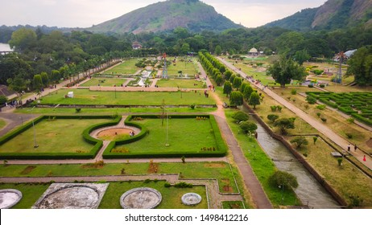
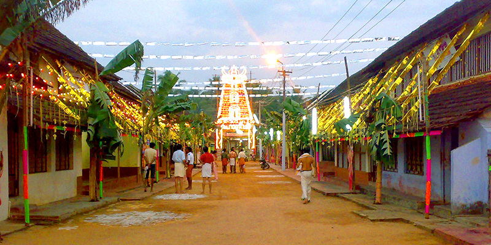

Malampuzha Dam


Kalpathy street
Palakkad, also known as Palghat, is a city and municipality in the state of Kerala in India. It is spread over an area of 26.60 square kilometres. It is the administrative headquarters of the Palakkad District. Palakkad is the gateway to Kerala due to the presence of the Palakkad Gap in the Western Ghats. Malayalam is the official language in Palakkad. The district has many small and medium rivers, which are tributaries of the Bharathapuzha River. Of the numerous dams in Palakkad district, the largest Malampuzha dam is 12 kilometres from Palakkad city.